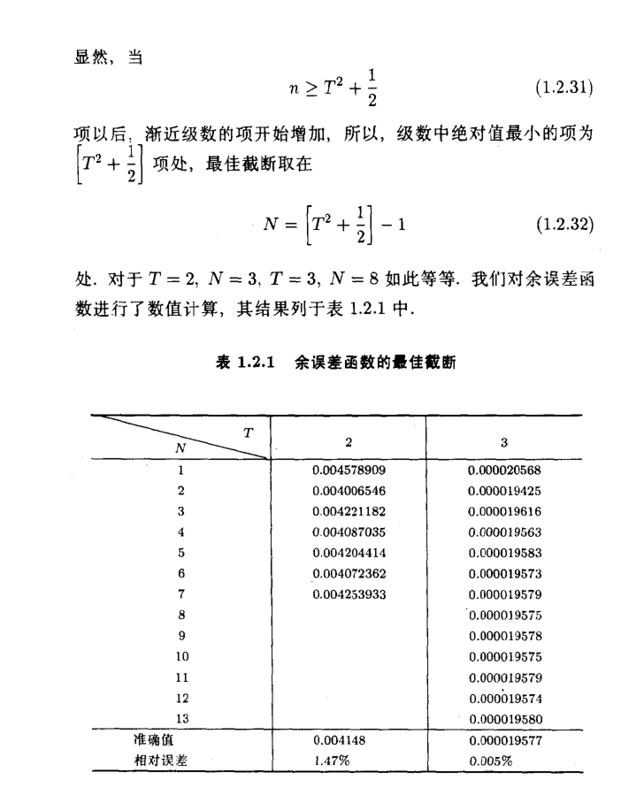

泛函分析 谱理论 预解resolvent算符#
泛函分析 (Functional Analysis) 和谱理论 (Spectral Theory) 是研究无穷维线性空间及其线性算符性质的强大工具，在量子力学 (QM) 和量子场论 (QFT) 中具有核心地位。 其中resolvent算符是泛函分析和谱理论中最重要的概念之一。 它不仅编码了线性算符的全部谱信息，还作为格林函数和微扰理论的基础。
当然在经典物理里面这些盖概念也有很多应用， 因为人类几乎只能求解线性问题，非线性问题几乎只能微扰展开， 所以泛函分析和谱理论的工具无处不在。
而且我建议先了解经典物理里面的微扰，以免误认为发散之类的概念是量子理论特有的。 (我认为这里很多工具是为了求解流体力学，动力系统（一个偏微分，一个常微分方向）等经典物理问题而发明的， 量子力学和量子场论只是顺手拿来用了一下而已。)
推荐中文书籍, 数学物理中的渐进分析，为微扰展开打一点基础。 至于谱理论 推荐书籍？
泛函分析的核心思想#
函数空间#
泛函分析的核心洞见是将函数 f(x) 视为一个具有无穷多个分量的向量，所有这些函数构成了一个无限维向量空间。例如，L^2(\mathbb{R}) 空间是所有平方可积函数的集合，也是量子力学中波函数 \psi(x) 的“家园”。
希尔伯特空间#
希尔伯特空间是泛函分析中最重要的函数空间，具有内积结构：
$$
\langle f | g \rangle = \int f^*(x) g(x) dx
$$
内积定义了几何概念，如范数、角度和正交性。量子力学的数学框架正是基于希尔伯特空间。
线性算符#
线性算符是泛函分析中的“矩阵”，它将一个函数 f 映射为另一个函数 g = Af。例如：
- 位置算符 \hat{x}：(\hat{x}f)(x) = x \cdot f(x)
- 动量算符 \hat{p}：(\hat{p}f)(x) = -i\hbar \frac{d}{dx}f(x)
这些算符将微分方程（如薛定谔方程 H\psi = E\psi）转化为无限维线性代数问题。
谱理论的核心内容#
谱的分类#
- 点谱 (Point Spectrum)：对应于算符的本征值，描述束缚态（如氢原子的分立能级）。
- 连续谱 (Continuous Spectrum)：描述散射态（如自由粒子的连续能量）。
预解算符#
谱理论通过研究预解算符 R(z; A) = (zI - A)^{-1} 来提取算符的谱信息。R(z; A) 的奇点（如极点、分支切割）编码了点谱和连续谱的全部信息。
微扰理论工具#
- Resolvent 恒等式：
$$
R = R_0 + R_0 V R
$$ - 玻恩级数 (Born Series)：
$$
R = R_0 + R_0 V R_0 + R_0 V R_0 V R_0 + \dots
$$ - Lippmann-Schwinger 方程**和 **Dyson 方程：微扰理论的具体实现。
Resolvent 的核心概念#
“Resolvent” 是泛函分析（Functional Analysis）和谱理论（Spectral Theory）中最核心、最强大的概念之一。它的精髓在于，它是一个“万能钥匙”，几乎编码了一个线性系统（用算符 A 描述）的全部信息。
Resolvent 的定义#
从数学上讲，给定一个线性算符 A（可以是一个 N \times N 矩阵，也可以是一个微分算符，如 \frac{d^2}{dx^2}），其 Resolvent R(z; A) 定义为：
$$
R(z; A) = (zI - A)^{-1}
$$
其中，I 是单位算符，z 是复数。
- Resolvent 是 A 的“逆”，但通过复变量 z 进行参数化。
- 当 z 不是 A 的本征值时，R(z; A) 是解析的。
Resolvent 的三大作用#
1. 谱的探测器 (Spectrum Detector)#
Resolvent 的奇点（如极点、分支切割）揭示了算符 A 的谱信息：
- 离散谱：孤立极点对应束缚态能量。
- 连续谱：分支切割对应散射态能量。
- 共振态：第二黎曼片上的极点对应共振态。
通过研究 R(z; A) 的奇点，可以提取 A 的所有谱信息，而无需直接解 A\psi = \lambda\psi。
2. 响应的发生器 (Green's Function)#
Resolvent 是系统的格林函数。对于一个源驱动的线性系统：
$$
(A - \lambda_0) \psi = f
$$
其解为：
$$
\psi = -R(\lambda_0; A) f
$$
因此，R(z; A) 描述了系统 A 在频率 z 下对点源的响应。
3. 微扰的发动机 (Perturbation Engine)#
假设 A = A_0 + V，其中 A_0 的 Resolvent 已知，V 是微扰。通过 Resolvent 恒等式：
$$
R = R_0 + R_0 V R
$$
可以迭代生成微扰级数：
$$
R = R_0 + R_0 V R_0 + R_0 V R_0 V R_0 + \dots
$$
这为微扰理论提供了系统的数学框架。
Resolvent 的总结#
Resolvent R(z; A) = (zI - A)^{-1} 是一个集大成者：
- 谱的字典：奇点揭示系统的谱。
- 响应的蓝图：它是格林函数。
- 微扰的引擎：生成微扰级数。
- 算符函数的定义：通过复积分定义 A 的函数。
Resolvent 将线性代数问题转化为复分析问题，是泛函分析和谱理论中的核心工具。
Resolvent 再谈#
谱的探测器：复平面上的“奇点”地图#
你问：“Resolvent 和这些支点割线有什么关系？”关系就是：Resolvent 是一个在复平面上“活着”的函数，而算符 A 的“谱” \sigma(A)，就是这个函数的“奇点”集合。我们来构建这个“地图”：
“地图”的定义#
- Resolvent R(z; A): 定义为 R(z; A) = (zI - A)^{-1}，是一个以复数 z 为变量的算符值函数。
- Resolvent Set \rho(A): 在复平面 z 上，所有使 R(z; A) 存在且有界（即 (zI-A) 可逆）的点，构成了“安全”区域。在这些点上，R(z; A) 是解析的（analytic）。
- 谱 \sigma(A): 在复平面 z 上，所有使 R(z; A) 不存在或无界（即 (zI-A) 不可逆）的点，构成了“危险”区域。这些点就是 R(z; A) 的奇点。
“危险区域” (奇点) 的分类#
对于量子力学中的厄米算符 A（A = A^\dagger），它的谱 \sigma(A) 必须位于实轴上。Resolvent 在实轴上的“奇点”形态，精确地对应了不同谱的分类：
离散谱 (Point Spectrum) \to 孤立极点 (Isolated Poles)#
- 数学: 假设 \lambda_n 是 A 的一个离散本征值（束缚态能量），对应的本征态为 |\psi_n\rangle。在 z \approx \lambda_n 附近，Resolvent 的矩阵元 \langle \phi | R(z) | \chi \rangle 的主导行为是：
$$
\langle \phi | (zI - A)^{-1} | \chi \rangle \approx \frac{\langle \phi | \psi_n \rangle \langle \psi_n | \chi \rangle}{z - \lambda_n} + (\text{其他解析部分})
$$
结论： R(z; A) 在复平面 z 上的每一个离散本征值 \lambda_n 处，都有一个一级极点 (simple pole)。 - 物理: 探测这个 Resolvent 函数，找到它在实轴上的所有“杆子”（poles），你就找到了系统的所有“束缚态”能量。
连续谱 (Continuous Spectrum) \to 分支切割 (Branch Cuts)#
- 数学: 假设 A 的谱在 [E_{min}, \infty) 上是连续的（散射态能量）。R(z; A) 的矩阵元包含一个积分：
$$
\langle \phi | R(z) | \chi \rangle = \int_{E_{min}}^{\infty} dE \frac{\langle \phi | \psi_E \rangle \langle \psi_E | \chi \rangle}{z - E} + (\text{束缚态的极点})
$$
这个积分定义了一个在实轴 [E_{min}, \infty) 上有“分支切割”的函数。根据 Sokhotski–Plemelj 定理，这个积分的值会“跳变”：
$$
\lim_{\epsilon \to 0^+} \frac{1}{E_0 \pm i\epsilon - E} = \mathcal{P}\left(\frac{1}{E_0 - E}\right) \mp i\pi \delta(E_0 - E)
$$
（\mathcal{P} 表示柯西主值）
结论： R(z; A) 在 [E_{min}, \infty) 这条线上是不连续的。这条不连续的线，就是一个分支切割 (Branch Cut)。 - 物理: 系统的“连续谱”在 Resolvent 上的体现，就是一条它无法跨越的“割线”。
共振态 (Resonances) \to 第二黎曼片上的极点#
- 数学: 割线 [E_{min}, \infty) 把复平面分成了“两半”。R(z; A) 可以被解析延拓到“第二”（“非物理”）黎曼片。一个共振态表现为 R(z; A) 在第二黎曼片上的一个极点：
$$
z_{res} = E_0 - i\frac{\Gamma}{2}
$$
实部 E_0 是共振能量，虚部 \Gamma/2 决定了它的衰变宽度（寿命 \tau = \hbar/\Gamma）。 - 物理: Resolvent 的“地图”比我们想象的要大。在“地图”的“背面”（第二黎曼片），藏着所有“共振态”的极点。
响应的发生器 (Green's Function)#
算符 \to 积分核 (Kernel)#
\psi = -R(\lambda_0; A) f 是一个抽象的算符方程。在位置表象中，这个方程“翻译”为：
$$
\langle x | \psi \rangle = - \int dy \, \langle x | R(\lambda_0; A) | y \rangle \langle y | f \rangle
$$
我们定义 G(x, y; \lambda_0) \equiv \langle x | R(\lambda_0; A) | y \rangle。这就是你熟悉的格林函数方程：
$$
\psi(x) = - \int dy \, G(x, y; \lambda_0) f(y)
$$
G(x, y; \lambda_0) 被称为 Resolvent 算符的积分核 (Integral Kernel)。
精髓: Resolvent 是抽象的算符，而格林函数是它在某个具体表象（如位置表象）下的“矩阵元”。
为什么微扰“能够成立”？#
这个问题是微扰论的核心：“为什么这个无穷级数 R = R_0 + R_0 V R_0 + \dots 能够成立？”答案是：它“成立”有两种截然不同的含义，这两种含义对应了两种不同的数学结构。
含义一：“收敛级数” (Convergent Series)#
R = R_0 (I - V R_0)^{-1}。我们把它展开成 R = R_0 \sum_{n=0}^\infty (V R_0)^n。这是一个算符的几何级数（Geometric Series）。
-
什么时候成立？ 这个级数绝对收敛 (converges) 的充分条件是，它的“公比”的**范数（Norm）**小于1：
$$
| V R_0 | < 1
$$
R_0(z) = (zI - A_0)^{-1} 的“大小”取决于 z 离 A_0 的谱（本征值）有多远。 -
物理含义: 如果微扰 V 足够“小”，并且探测的能量 z 离系统的“裸”能级（A_0 的谱）足够“远”，那么这个级数就会收敛。
含义二：“渐近级数” (Asymptotic Series)#
这是物理学中（尤其是 QFT）更常见也更深刻的情况。
-
定义: 一个级数 S_N = \sum_{n=0}^N c_n \lambda^n 即使在 N \to \infty 时发散，它也可以是 S(\lambda) 的一个“渐近”表示。如果“截断误差”满足：
$$
| S(\lambda) - S_N(\lambda) | = O(\lambda^{N+1}) \quad (\text{当 } \lambda \to 0 \text{ 时})
$$
我们就称这个（可能发散的）级数是 S(\lambda) 的渐近级数。 -
物理含义: 这意味着，对于一个固定的项数 N，当耦合常数 \lambda \to 0 时，这个近似解 S_N(\lambda) 会快速逼近真实解 S(\lambda)。
总结#
Resolvent 恒等式 R = R_0 + R_0 V R 是精确的、非微扰的。它的迭代级数 R = R_0 + R_0 V R_0 + \dots 为什么“成立”？
- 在“良好”的系统（如 QM 束缚态）中：因为它是一个收敛级数（只要 V 足够小）。
- 在“病态”的系统（如 QFT）中：因为它是一个渐近级数。它虽然在 n \to \infty 时发散，但它的“前几项”提供了对真实物理的极其精确的近似。
微扰展开 截断#
发散级数并非无用，比如斯特林公式的渐近展开：
$$ n! \sim \sqrt{2\pi n} \left(\frac{n}{e}\right)^n \left(1 + \frac{1}{12n} + \frac{1}{288n^2} - \frac{139}{51840 n^3} + \dots \right)$$
比如余误差函数的渐近展开：



级数收敛性的改进 shanks变换：
级数解的解析延拓

重整化#
重整化 (Renormalization) 是一套“数学处方”，它告诉我们如何构造 (construct) 微扰级数的每一项 S_n。
渐近分析 (Asymptotic Analysis) 是一种“哲学诠释”，它告诉我们为什么这个（即使项项有限但整体发散的）级数 \sum S_n 值得计算。
而谱理论 (Spectral Theory) 是我们这一切的终极目标：我们做这一切，就是为了计算“真实”算符 A 的谱（即 Resolvent R(z; A) 的奇点）。
1. 谱理论的“理想” vs QFT 的“灾难”#
我们从谱理论的“理想”出发：
-
理想（目标）：
我们想求解一个“真实”的、相互作用的系统 A。我们想找到它的 Resolvent R(z; A) = (zI - A)^{-1}。
因为 R 的极点（Poles）就是我们想知道的物理谱（例如，实验中测量的“物理质量” m_p）。 -
策略（微扰）：
我们不会解 A，我们只会解“自由”系统 A_0（它的 Resolvent R_0 = (zI - A_0)^{-1} 是已知的，极点在“裸质量” m_0 处）。 -
发动机：
我们用 Resolvent 恒等式 R = R_0 + R_0 V R 来“构建” R。
$$
R = R_0 + R_0 V R_0 + R_0 V R_0 V R_0 + \dots
$$
在 QFT 中，R_0 V R_0 这样的项，就对应“1-loop”费曼图，R_0 V R_0 V R_0 就对应“2-loop”费曼图，等等。 -
灾难（QFT的现实）：
当我们真的去计算 QFT 中的这些项时，我们发现它们是无穷大。
比如，在 \lambda\phi^4 理论中，1-loop 自能图 \Sigma（它就是 V R_0 这类项的核心）的积分是：
$$
\int d^4k \frac{1}{k^2 - m_0^2}
$$
这个积分在 k \to \infty 时是发散的 (Divergent)。 -
后果：
我们的微扰级数 R = R_0 + (\infty) + (\infty)^2 + \dots 根本无法计算。我们连级数的第一项修正都写不出来。
2. 重整化：强行“构造”级数项 S_n#
重整化 (Renormalization) 不是一个深刻的物理原理，它是一套极其精巧的“数学急救术”，其唯一目的，就是为了让我们能够写出微扰级数的（有限的）每一项。
它在“渐近分析”和“谱理论”的框架下，扮演了如下角色：
第一步：承认“裸”参数的“病态” (Regularization)#
我们不能处理 \infty。所以我们引入一个“调节器”（Regularization），比如一个紫外截止 \Lambda。
现在，所有的圈图积分都是有限的，但它们依赖于 \Lambda（例如 \Sigma(\Lambda) \sim \Lambda^2）。
我们的 Resolvent 级数变成了：
$$
R(z; \Lambda) = R_0 + S_1(\Lambda) + S_2(\Lambda) + \dots
$$
第二步：重新定义“起点” A_0 (Renormalization)#
这是最核心的诡计。我们原来的目标是：从“裸谱” m_0（R_0的极点）出发，计算出“物理谱” m_p（R的极点）。
我们的计算（在谱理论中）表明：
$$
m_p^2 = m_0^2 + \delta m^2(\Lambda)
$$
其中 \delta m^2(\Lambda) 就是那个发散的自能 \Sigma(\Lambda)。当 \Lambda \to \infty 时，\delta m^2(\Lambda) \to \infty。
-
重整化说：
倒过来！我们不认识什么“裸质量” m_0。我们只认识我们在实验室测量的“物理质量” m_p。
我们强行定义（“重整化条件”）m_p 是一个有限的、已知的数。这就迫使我们的“裸质量” m_0 必须是一个依赖于 \Lambda 的“反常项” (Counter-term)：
$$
m_0^2(\Lambda) \equiv m_p^2 - \delta m^2(\Lambda)
$$
当 \Lambda \to \infty 时，这个“裸质量” m_0^2(\Lambda) 也必须是 \to -\infty，它被精确地定义为那个可以抵消掉 \delta m^2(\Lambda) 的无穷大。 -
结果：
一个“可用”的微扰级数
通过这个“用无穷抵消无穷”的重新定义，我们成功地**重写（re-write）**了我们的 Resolvent 级数。-
原始的（发散的）级数：
$$
R = R_0(m_0) + S_1(m_0, \lambda_0) + \dots
$$ -
重整化后的（有限的）级数：
$$
R = R_p(m_p) + S'_1(m_p, \lambda_p) + S'_2(m_p, \lambda_p) + \dots
$$
在这个新级数中，每一项 S'_n 都是有限的（在 \Lambda \to \infty 极限下）。
-
3. 渐近分析：给这个“构造”赋予意义#
好了，通过“重整化”，我们终于有了一个级数 R \approx \sum_{n=0}^N S'_n。我们安全了吗？没有。
物理学家（特别是 Freeman Dyson）很快意识到，这个“重整化后”的 QED 级数（一个关于 \alpha \approx 1/137 的级数）它自己很可能也是发散的（当 n \to \infty 时）！
为什么？（Dyson的启发式论证）#
假设 QED 级数是收敛的。那么 R(\alpha) 在 \alpha=0 附近是解析的。这意味着 R(\alpha) 在 \alpha = -1/137 （一个小的负值）也应该是收敛的、有意义的。
但是，一个 \alpha < 0 的 QED（同性电荷相吸，异性电荷相斥）是一个极度不稳定的理论。真空会“衰变”，系统会“崩溃”。
一个“崩溃”的理论不可能有一个定义良好的 Resolvent。这表明 R(\alpha) 在 \alpha=0 这一点不可能是解析的（它有一个本质奇点 (Essential Singularity)）。
如果 R(\alpha) 在 \alpha=0 不是解析的，那么它的泰勒级数（微扰级数）的收敛半径必定为 0。
- 结论：
微扰级数 \sum S'_n 必定在 n \to \infty 时发散！
那我们到底在干什么？#
这就是渐近分析登场的地方。微扰级数 \sum S'_n 不是一个“收敛级数”，它是一个“渐近级数”。
它的“意义”不在于 n \to \infty 的总和，而在于它在 \lambda \to 0 时的行为。
- 渐近分析的视角：
我们“重整化”所辛苦构造出来的级数 \sum S'_n，它在数学上是 “真实”Resolvent R(\lambda) 在 \lambda=0 处的渐近展开。
$$
R(\lambda) \sim \sum_{n=0}^N S'_n \lambda^n + O(\lambda^{N+1})
$$
最终总结：三者的角色#
-
谱理论（目标）：
我们的目标是找到“真实”算符 A 的谱（Resolvent R 的极点）。这个真实的谱 m_p 是有限的。 -
微扰 + 重整化（构造过程）：
我们假设 R 可以按 \lambda 展开 R \sim \sum S'_n \lambda^n。
我们发现 S'_n 充满了 \infty（来自 R_0 V \dots 的圈图）。
重整化是一个“黑魔法”，它通过定义 A_0 和 V 中的“反常项” \delta m(\Lambda)，强行使得这个展开式中的每一个系数 S'_n 都是有限的（用物理谱 m_p 来表达）。 -
渐近分析（意义诠释）：
我们承认，我们构造出来的这个级数 \sum S'_n \lambda^n 本身是发散的（当 n \to \infty）。
但我们指出，它是一个渐近级数。因此，计算它的前几项（比如到 S'_2，即 two-loop），是有意义的、且是（目前）唯一可行的，用以近似那个“真实”但我们无法企及的 R(\lambda) 的方法。
创建日期: 2025-10-31